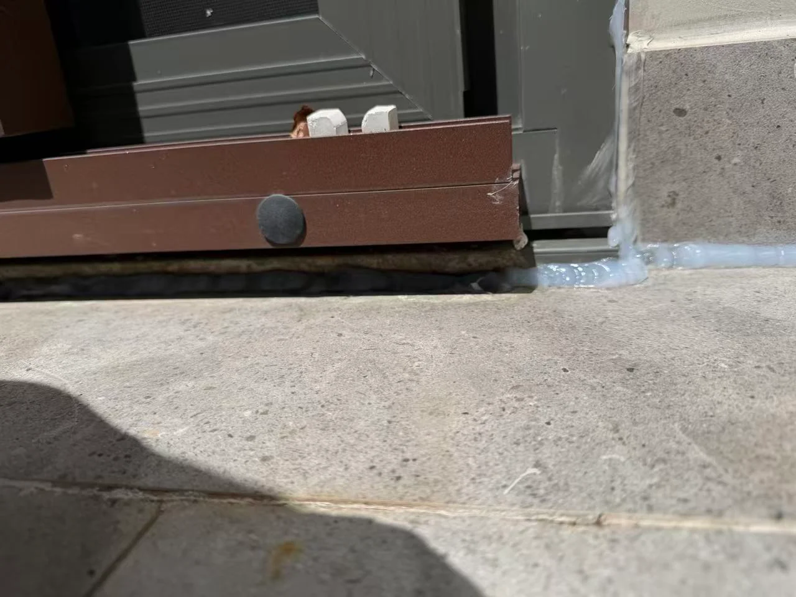

Ellis Services Group · Waterproofing
External Wall Waterproofing

We trace rain-related wall leaks and repair exposed surfaces, edges and junctions. Our team prepares the wall and applies a compatible protective system, with attention to the connections where water enters and the finish you will see.
Enquire about external wall, edge and corner waterproofing ↗Back to waterproofing services →Ellis Services Group
External wall water entry at edges and junctions
Protection and repairs for exposed walls, edges, corners and connection points.
For damp patches after rain, tell us where water appears and whether the affected wall connects to a roof, doorway or outdoor tiled area. We inspect accessible surfaces and adjoining junctions before agreeing base preparation and a selected protective system. The written scope confirms the included areas, materials and finish; the visible patch alone does not identify its source.
Included in your agreed scope
- Assessment of accessible damage and water-entry points
- Preparation and repair of affected surfaces
- Protective coating and junction detailing
External wall damp diagnosis at adjoining surfaces
Damp staining may appear away from the original water-entry point. Tell us whether it follows rain, particular wind conditions or constant moisture, and whether the wall adjoins a roof, doorway or tiled outdoor area. External wall damp diagnosis starts with accessible surfaces and water ingress at junctions. Previous coatings, cracks, sealants and finish condition affect whether a protective treatment is suitable; covering the visible patch alone may leave the source unresolved.
Accessible edges and corners with a defined repair boundary
We define the work area, surface preparation and connections to surrounding finishes in your quote. We arrange access before assessing elevated or concealed areas and identify any separate investigation or trade work. Below-ground structures, retaining walls and structural repairs require their own scope. We discuss the expected colour and texture match before treating the wall.
Wall substrates, water pressure and protective finishes
We assess the wall material, accessible water-entry details and whether the selected treatment will remain exposed or be covered. Polymer-modified cementitious coatings and other membranes have product-specific movement and water-pressure limits. A general wet-area membrane is not automatically suitable for negative-side pressure. The agreed wall work identifies compatible preparation, detailing and protection; separate window, drainage or structural work needs its own scope.
Wall junction preparation and coating compatibility
- Review the affected area and confirm access, the moisture pattern and suitability.
- Agree an itemised written quote covering preparation, materials, boundaries, finish and exclusions.
- Prepare the accessible base and carry out the agreed work, with checks appropriate to the selected system.
- Explain curing, return to use and care at handover. Timing follows the materials and site conditions.
Wall junctions, roof edges and balcony connections
At a tiled threshold or outlet see balcony waterproofing; water entry from above may need roof waterproofing assessment.
Read the waterproofing FAQs and drying and curing guidance. For local access and location details, check our service areas.
Wind-driven rain at wall and window junctions
If an inside wall becomes damp only when rain blows towards it, record the wall face, nearby window or balcony and the first place moisture appears. Water at a window edge can come from several adjoining details; it does not by itself confirm a failed window seal or wall membrane. We assess accessible exterior wall edges, corners and connected surfaces for the waterproofing scope.
The repair needs a sound base and compatible adjoining finishes. A confirmed local junction defect may suit a limited repair; widespread cracking or water arriving from another building element needs that source addressed first. Window-unit repairs, glazing and separate roof or drainage work need their own assessment and scope.